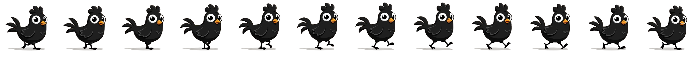
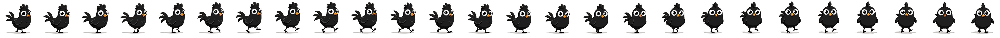

Negro editorial, un solo acento, números que hablan. La pluma es del gallo: ligera, precisa, suficiente. Un sistema para que TODO Klo-Ser — dashboards, métricas, sitio y Klo mismo — se sienta una sola pieza profesional.

El fondo casi negro no decora: hace que el dato brille. Nada de blanco encandilante en pantallas de trabajo.
Un solo color de acento en todo Klo-Ser, y siempre significa lo mismo: «esto importa ahora». Si decora, se pierde.
Grande y en peso ligero. La etiqueta susurra en mayúsculas espaciadas. Se lee de un vistazo desde lejos.
Las marcas de dato llevan gradientes suaves y halos difuminados. El texto jamás lleva color encima.
El gallo vive en la carga, los vacíos, el chat y el ícono — no en cada esquina. Mascota con clase, no estampado.
Máximo dos niveles de navegación. Cada pantalla responde una pregunta y ofrece UNA acción obvia.
Cinco neutros y un acento. Prueba los tres acentos con el selector de arriba a la derecha — toda la lámina se re-pinta, así se sentiría el sistema completo.
La misma fuente del wordmark KLŌSER. Geométrica, ligera, con carácter — los números grandes son la firma visual del sistema.
La que ya vive en la app. Cálida y legible en chico.
MICRO-ETIQUETAS · MAYÚSCULAS · ESPACIADAS
El susurro que acompaña a cada número héroe.
Las piezas con las que se arma cualquier dashboard: tile héroe, tile de acento (solo UNO por pantalla), barras redondeadas con la barra que importa encendida, anillo de progreso y medidores por persona.
Así se vería «Hoy» del admin: responde en un vistazo ¿cómo vamos, quién necesita ayuda y qué se está enfriando? — con los datos que el sistema ya mide.
El mismo lenguaje en el teléfono — y Klo siempre a un toque, en su botón flotante.
La identidad ya existe y ya es tuya: el logo de Klo-Ser, su tipografía y el gallito que hiciste se quedan exactamente como están. PLUMA no rediseña la marca: viste la interfaz alrededor de ella. El gallo sigue siendo el alma — aparece en la pantalla de carga, los estados vacíos, el chat de Klo y el ícono de la app.

El gallo original — sin tocar. Momentos con alma, no papel tapiz.
El logo y su tipografía se usan tal cual existen hoy, sobre los fondos blanco y negro de PLUMA.
Cada quien ve solo lo que le sirve, ordenado por la pregunta que responde. Klo (el chatbot) vive como botón flotante en TODAS las pantallas — nunca hay que buscarlo.
Cambio vs hoy: «Equipo» une Asesores + Guardias en el admin, y ambos roles ganan una pantalla «Hoy» que abre el día.